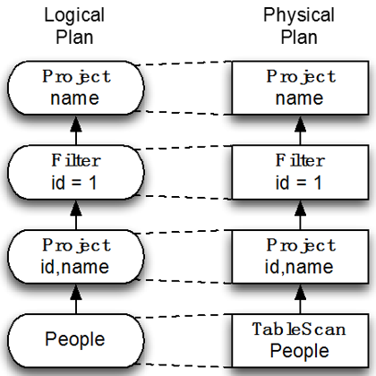
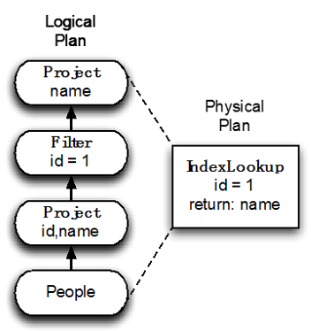
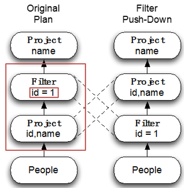

Catalyst介绍
Catalyst是一款基于规则的优化器，Analyzer和Optimizer定义了一系列优化规则，Catalyst根据这些规则对执Logical Plan进行优化。
对于下面这个sql查询
select name from(
select id, name from people
) p
where p.id = 1
最简单就是不做优化，直接一对一将Logical Plan映射为Physical Plan。

而最直接的方法就是就按照下图的方式进行优化，这种方法的难点在于：很难写一个通用的框架支持不同情况的优化方法。

Catalyst的做法是，每一条优化规则只做最简单的修改，不同的规则互相协作，依次循环地对Logical Plan进行优化，最后形成一个稳定的Optimized Logical Plan。如下图所示，对于最原始的的Logical Plan
- 先使用Filter Push Down规则，将Filter和Project进行交换
- 然后使用Combine Projection规则，将两个Project合并
- 最后生成物理计划

规则
一个规则一般包括三个部分：
- 匹配
- 过滤
- 修改
让我们以Filter Push Down规则为例，看看Catalyst是如果执行规则的。 
- 首先在Logical Plan上寻找Filter Push Down的匹配条件，即Filter下面是Project
- 然后判断过滤条件，即Filter是否可以不需要通过Project就可以计算
- 最后做修改，即交换Filter和Project
利用Scala的Case Class 和 match语法来实现Catalyst的优化规则是非常简单的，例如Filter Push Down规则可以用下面几句代码实现：
val newPlan = queryPlan transform {
case f @ Filter(_, p @ Project(_, grandChild))
if(f.references subsetOf grandChild.output) =>
p.copy(child = f.copy(child = grandChild)
}
queryPlan是原始的未经优化的Logical Plan，是一个Treecase f @ Filter(_, p @ Project(_, grandChild))用来寻找Filter下面是Project的模式if(f.references subsetOf grandChild.output)用来判断Filter是否可以不需要通过Project就可以计算p.copy(child = f.copy(child = grandChild)用来交换Filter和Project
例子
让我们以下面这个sql查询为例子，看看SparkSQL是怎么从Logical Plan进行优化，最后生成Physical Plan的。
println(
sql( s"""
|SELECT name
|FROM (SELECT name, age FROM rddTable) p
|WHERE p.age >= 13 AND p.age <= 19
|""".stripMargin).queryExecution
)
Parsed Logical Plan
首先SqlParser会对输入的sql语句进行parser，生成Parsed Logical Plan。该Parsed Logcial Plan没有经过任何优化，是sql语句的直接翻译。
== Parsed Logical Plan ==
'Project ['name]
'Filter (('p.age. >= 13) && ('p.age. <= 19))
'Subquery p
'Project ['name,'age]
'UnresolvedRelation None, rddTable, None
我们依次从下往上看
- UnresolvedRelation表示一个表格，目前只有表名rddTable，对应于sql中的
FROM rddTable - Project表示投影，对应于sql中的
SELECT name, age - Subquery是子查询，对应于sql中的
(SELECT name, age FROM rddTable) p - Filter是过滤条件，对应于sql中的
WHERE p.age >= 13 AND p.age <= 19 - Project表示投影，对应于sql中的
SELECT name
值得注意的是，Project、Filter、Subquery和UnresolvedRelation上面的单引号表示该Logical Plan是Unresolved。
Analyzed Logical Plan
接下来的任务正式交接给Catalyst，首先Catalyst会根据内部定义的规则，将Parsed Logical Plan变成Analyzed Logical Plan。
== Analyzed Logical Plan ==
Project [name#0]
Filter ((age#1 >= 13) && (age#1 <= 19))
Project [name#0,age#1]
LogicalRDD [name#0,age#1], MapPartitionsRDD[4] at mapPartitions at ExistingRDD.scala:36
其中
- UnresolvedRelation被映射成了具体的LogicalRDD，而table name到Logical Plan的映射被保持在Catalog
- UnresolvedAttribute被映射成AttributeReference
Optimized Logical Plan
然后Catalyst会继续对Analyzed Logical Plan进行优化，生成Optimized Logical Plan。
== Optimized Logical Plan ==
Project [name#0]
Filter ((age#1 >= 13) && (age#1 <= 19))
LogicalRDD [name#0,age#1], MapPartitionsRDD[4] at mapPartitions at ExistingRDD.scala:36
其中进行了两次规则应用：
- Filter Push Down将Filter和Project进行交换
- Combine Projection将两个Project合并
Physical Plan
最后把Optimized Logical一对一的映射为Physical Plan。
== Physical Plan ==
Project [name#0]
Filter ((age#1 >= 13) && (age#1 <= 19))
PhysicalRDD [name#0,age#1], MapPartitionsRDD[4] at mapPartitions at ExistingRDD.scala:36
总结
Catalyst的输入是Unresolved Logical Plan，在优化的过程当中，Catalyst会根据Analyzer和Optimizer中定义的规则，检测输入的执行计划中有没有符合规则条件的子树，如果有的话就会触发某个特定的优化规则，这些规则将依次循环地运行，直到达到最大迭代次数或者达到稳定的输出。